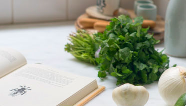
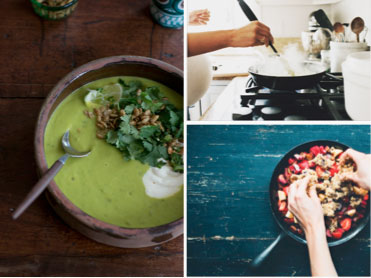
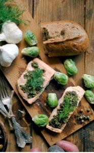
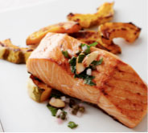
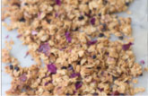

Blog
Share

Food Porn?!
90 degree,45 degree,10-20 degree,or 0 degrees choosing the best angle when photographing food be overwhlming.

90 degree,45 degree,10-20 degree,or 0 degrees choosing the best angle when photographing food be overwhlming.


90 degree,45 degree,10-20 degree,or 0 degrees choosing the best angle when photographing food be overwhlming.
More Posts from Kerry Hotel
Your Secret Chefs
Sake is another fish that is popularly served as sashimi. Its bright orange flesh is tender,fatty...
Cooking with Natural Foods
Sake is another fish that is popularly served as sashimi.

Heebal Rice Salad with Peanuts
Sake is another fish that is popularly served as sashimi.